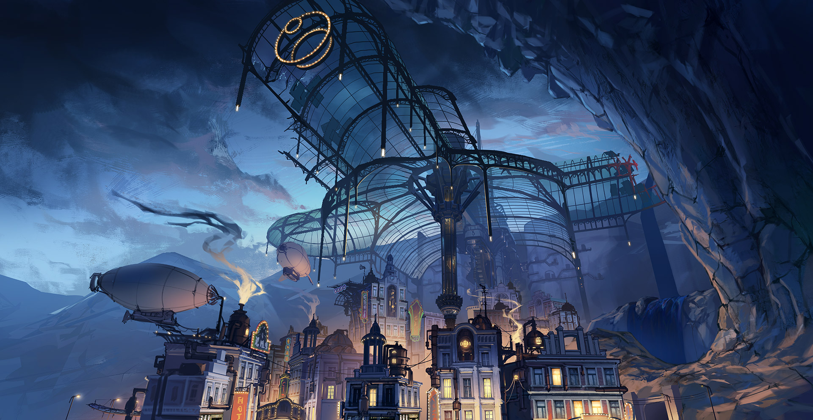

首頁
技術博客
個人履歷
作品集
找到我們
等到又一顆月也沉入杯底…
07/25/2024
《絕區零》朱鳶EP《一顆方糖懸滯的時間》現已上架音樂平台
「噢？一個完美的電線桿。」
07/25/2024
六分街街頭異聞 | 第2話 本性難改
等到又一顆月也沉入杯底…
07/25/2024
《絕區零》朱鳶EP丨一顆方糖懸滯的時間
麗都修葺漫談，我們想就大家近期經常回饋的問題，分享一下目前的最佳化方向以及迭代規劃。
07/24/2024
麗都修葺漫談 VOL.1
親愛的繩匠，這裡是帶你走近代理人的《Behind the Agent》！
07/24/2024
《Behind the Agent》訪談手記：朱鳶篇
「注意看，這個人叫朱鳶。是一名治安官。不出意外，她今天也能完美處理好各種事務…」
07/23/2024
《絕區零》朱鳶角色展示 | 全天候·朱鳶長官！
資訊快報
查看更多
漂流於數據之海的孤島城市，洛星文化的傳承者與記敘者。 在洛星分崩離析之際，甌夏人紮根資料之海，建立了新的文明與秩序。 而今，「大崩壞」對這片土地帶來的傷痛已被時間抹消。依托數據之海，甌夏已然成為了一座繁華的現代化都市。
甌夏

查看更多
古安禾城「四廂」之一，記錄著安禾的另一種歷史。 「影」的陰霾與「海」的浸蝕曾令這片土地風雨飄搖，而今，瑯丘在前人的餘蔭下，維繫著奇異的秩序。
瑯丘
查看更多
在夢中，少女聽到了某人的低喃。 「在今後的人生裡，我會不停地，不停地，出現在你最深的夢魘裡。」 「直到有一天，你再也無力抵抗……」
夢，開始了
查看更多
朝著天空前進的人類從塔頂跌落了下來，神讓她再也無法理解別人的話。 可憐的人，她本來想與自己所愛的人永不分離，但從此她們再也無法相見。
命運的終結
查看更多
她，甦醒了。 而她，卻仍然被囚禁在那個夢中。
在坠落的天空下
查看更多
「那就去吧，布洛妮娅。未来的道路已经为你开启。」
自深海而来
查看更多
縱使長夜漫漫永劫無期，我也要化身星辰點燃希望。
流星劃過黑夜
查看更多
她踏出了那一步，朝著與光相反的方向。
獻予昨日的輓歌
查看更多
無法違反的命運，終將把所有人帶向同一個終點。
桔梗在此沉睡
查看更多
彈指之間，轉瞬千年。 記憶點燃之後的餘燼，散發著淡淡的餘溫。
太虛夢華錄
查看更多
詭異的舞台終將落下帷幕，熾熱到足以點燃明日天際的焰火在此刻綻放。
於是留下了火焰
查看更多
他從容地走向自己的結局。 誠如他自己所言——「我自願去死，而且死得其所」。 他結束了這場最後的狂歡，前往了那個渴望的彼岸，只為再次看見「那唯一的她」睜開雙眼…
阿波羅卡利斯如是說
查看更多
世界蛇祭祀場一角，晦暗的甬道蜿蜒而出，百步九折，其終點通往一座長眠於地底的荒蕪之庭。莊嚴的「豐碑」如巉峻的岩壁立於空間正中，昭示著這棟建築誕生自世界之肇。
往世樂土
查看更多
這就是「美麗」的永恆，我所相信的…「真我」。 這就是「往世樂土」──逐火十三英桀的故事。
致以無瑕之人
查看更多
一切自此而始，亦將自此告結。 這並不是三位少女與凱文之間的博弈， 而是全人類，對命運發起的抗爭。
跨越終焉之日
查看更多
眾生行過白晝，而後歿入長夜。
在海的指尖
查看更多
「盲眼的旅人於無名的霧中行走，那終既的種－已於此時，悄悄誕生。」
於星的彼岸
查看更多
這是「崩壞」從地球消失後的第八年。 由於人類的不懈努力，地球文明逐漸從可怕的災害中復甦，但在和平之下，仍有陰影蠢動。
後崩壞書第一章
查看更多
經歷亞天魔城風波後，主角一行人就落到了聖方丹懸崖下的福斯灣城區。 在這裡，主角結識了「對崩壞第二小隊」的緹米朵·丘忒與萊爾·科洛迪，並在代理隊長布洛妮亞的帶領下，與芽衣、卡蘿爾重新會合。
後崩壞書第二章